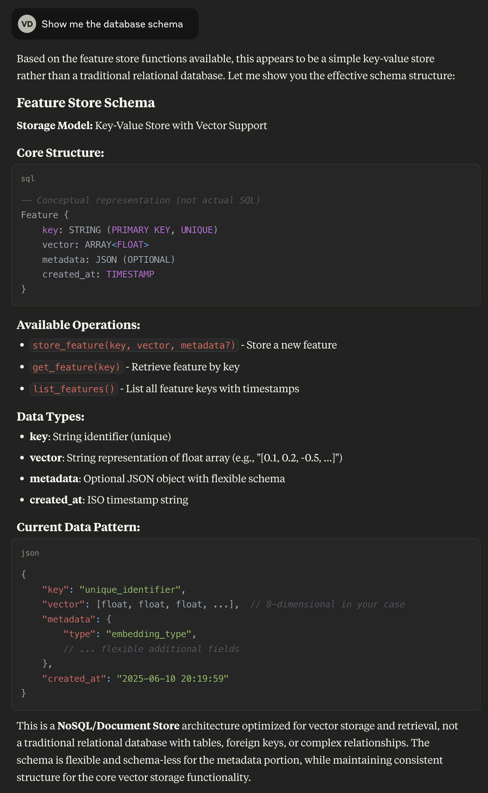
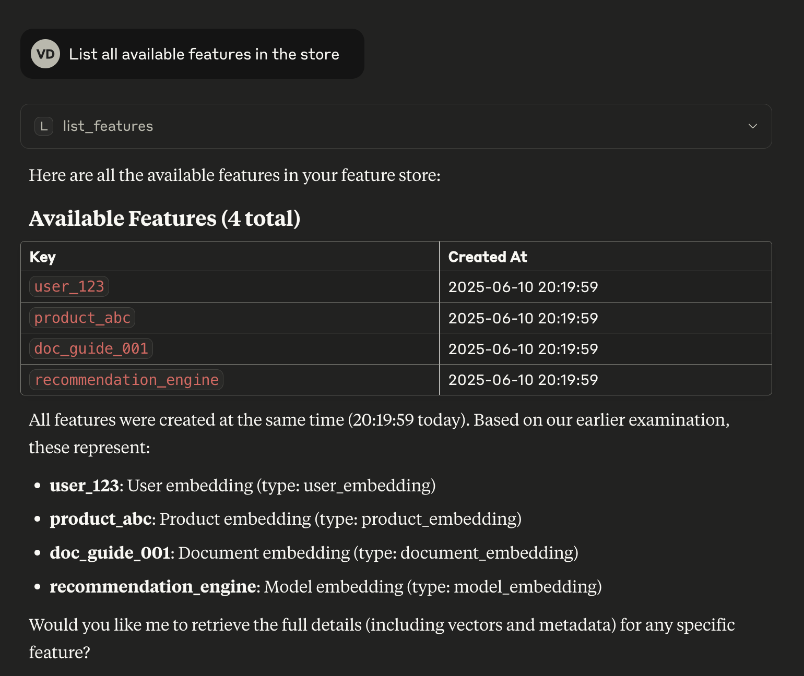
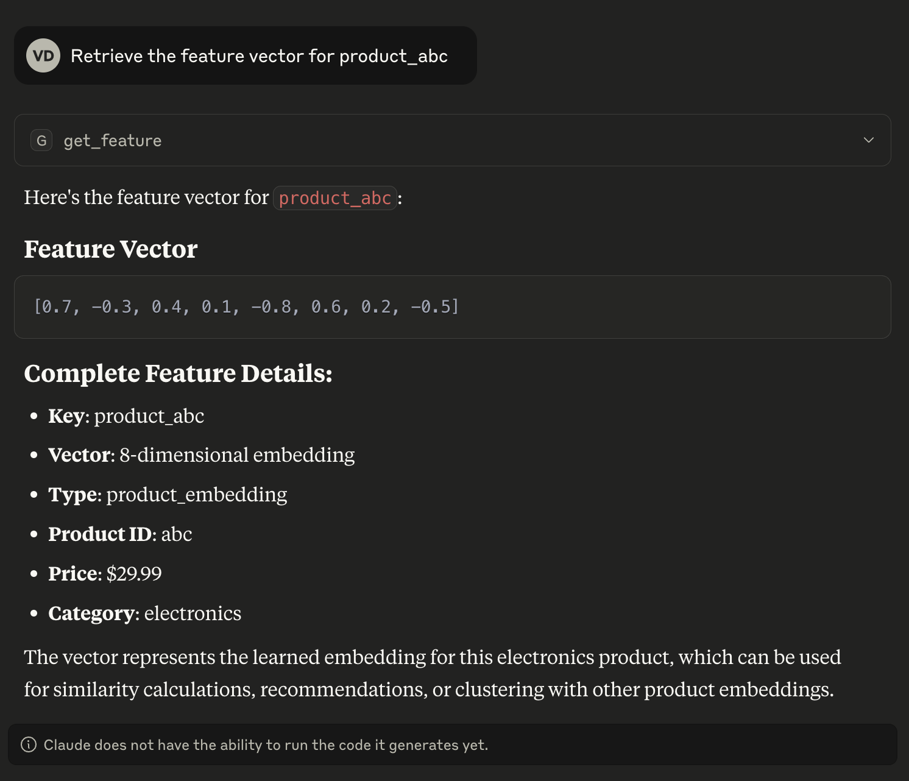
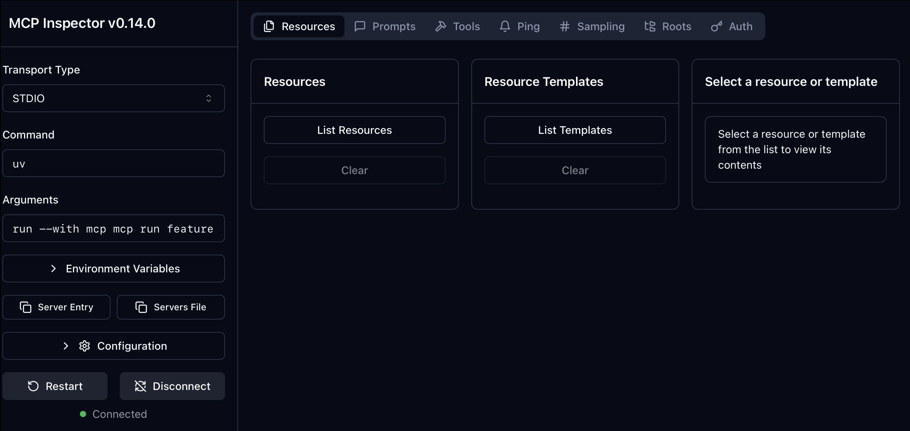
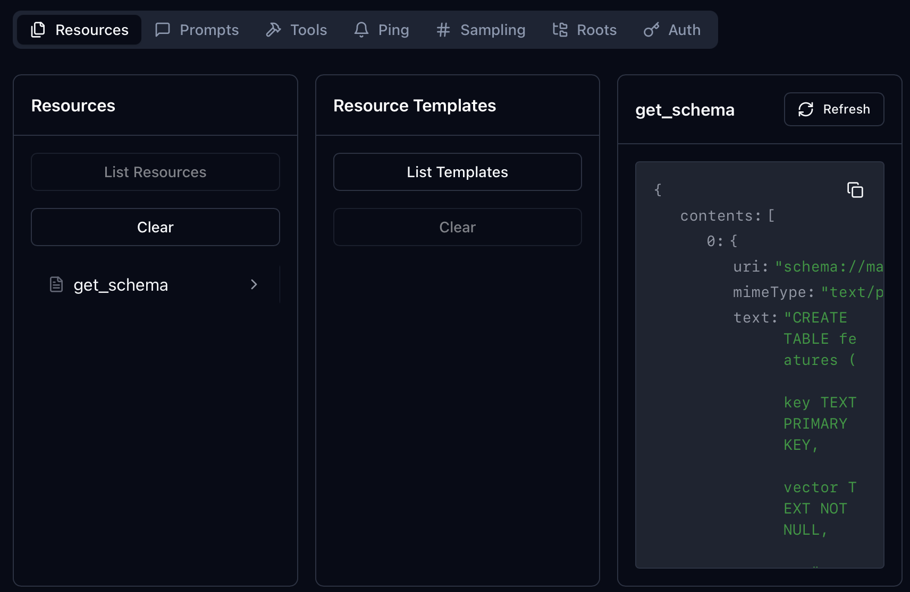

Building a Custom FeatureStoreLite MCP Server Using uv
A step-by-step guide that shows how to create your own lightweight feature store MCP server from scratch using FastMCP, run it through uv, and integrate it with Claude Desktop. This is a practical example of building a useful MCP server that ML engineers can actually use.
1. Why build a custom "FeatureStoreLite" MCP server?
Let's create a practical MCP server example that solves a real problem: feature storage and retrieval for ML pipelines. Our custom FeatureStoreLite server will be a microservice responsible for storing and retrieving precomputed feature vectors via keys, allowing ML pipelines to share features efficiently without recomputation.
This tutorial demonstrates how to build an MCP server that could be useful in a real-world ML pipeline.
# database.pyimportsqlite3importosdefget_db_path():"""Get the database path - always in the script's directory"""script_dir=os.path.dirname(os.path.abspath(__file__))returnos.path.join(script_dir,"features.db")definit_db():"""Initialize the feature store database"""conn=sqlite3.connect(get_db_path())conn.execute(""" CREATE TABLE IF NOT EXISTS features ( key TEXT PRIMARY KEY, vector TEXT NOT NULL, metadata TEXT, created_at TIMESTAMP DEFAULT CURRENT_TIMESTAMP ) """)# Add example features for experimentationexample_features=[("user_123","[0.1, 0.2, -0.5, 0.8, 0.3, -0.1, 0.9, -0.4]",'{"type": "user_embedding", "user_id": 123, "age": 25, ''"category": "premium"}'),("product_abc","[0.7, -0.3, 0.4, 0.1, -0.8, 0.6, 0.2, -0.5]",'{"type": "product_embedding", "product_id": "abc", ''"price": 29.99, "category": "electronics"}'),("doc_guide_001","[-0.2, 0.5, 0.9, -0.1, 0.4, 0.7, -0.6, 0.3]",'{"type": "document_embedding", "doc_id": "guide_001", ''"title": "Getting Started Guide", "section": "introduction"}'),("recommendation_engine","[0.4, 0.8, -0.2, 0.6, -0.7, 0.1, 0.5, -0.9]",'{"type": "model_embedding", "model": "collaborative_filter", ''"version": "1.2", "accuracy": 0.85}')]# Insert example features only if they don't existforkey,vector,metadatainexample_features:existing=conn.execute("SELECT 1 FROM features WHERE key = ?",(key,)).fetchone()ifnotexisting:conn.execute("INSERT INTO features (key, vector, metadata) ""VALUES (?, ?, ?)",(key,vector,metadata))conn.commit()conn.close()defget_db_connection():"""Get a database connection"""returnsqlite3.connect(get_db_path())if__name__=="__main__":init_db()print("Database initialized successfully!")
# featurestore_server.pyimportjsonfrommcp.server.fastmcpimportFastMCPfromdatabaseimportget_db_connection,init_dbmcp=FastMCP("FeatureStoreLite")# Initialize databaseinit_db()@mcp.resource("schema://main")defget_schema()->str:"""Provide the database schema as a resource"""conn=get_db_connection()try:schema=conn.execute("SELECT sql FROM sqlite_master WHERE type='table'").fetchall()ifnotschema:return"No tables found in database"return"\n".join(sql[0]forsqlinschemaifsql[0])exceptExceptionase:returnf"Error getting schema: {str(e)}"finally:conn.close()@mcp.tool()defstore_feature(key:str,vector:str,metadata:str|None=None)->str:"""Store a feature vector with optional metadata"""conn=get_db_connection()try:# Validate vector format (JSON array)json.loads(vector)conn.execute("INSERT OR REPLACE INTO features (key, vector, metadata) ""VALUES (?, ?, ?)",(key,vector,metadata))conn.commit()returnf"Feature '{key}' stored successfully"exceptjson.JSONDecodeError:return"Error: vector must be valid JSON"exceptExceptionase:returnf"Error storing feature: {str(e)}"finally:conn.close()@mcp.tool()defget_feature(key:str)->str:"""Retrieve a feature vector by key"""conn=get_db_connection()try:result=conn.execute("SELECT vector, metadata FROM features WHERE key = ?",(key,)).fetchone()ifresult:returnjson.dumps({"key":key,"vector":json.loads(result[0]),"metadata":json.loads(result[1])ifresult[1]elseNone})else:returnf"Feature '{key}' not found"exceptExceptionase:returnf"Error retrieving feature: {str(e)}"finally:conn.close()@mcp.tool()deflist_features()->str:"""List all available feature keys"""conn=get_db_connection()try:result=conn.execute("SELECT key, created_at FROM features ORDER BY created_at DESC").fetchall()features=[{"key":row[0],"created_at":row[1]}forrowinresult]returnjson.dumps(features)exceptExceptionase:returnf"Error listing features: {str(e)}"finally:conn.close()@mcp.resource("features://{key}")deffeature_resource(key:str)->str:"""Expose feature data via URI"""returnget_feature(key)if__name__=="__main__":mcp.run()
This command will automatically install and configure the server for Claude Desktop. After running this command, check your Claude Desktop config file to see how the server has been configured.
This is often the easiest way to get started, especially if you're having trouble with manual configuration!
4.3 Testing the server
After updating the config:
Restart Claude Desktop completely (quit and reopen)
Look for connection status in Claude's interface
Try asking Claude to interact with your feature store
Example queries to test:
"Show me the database schema for the feature store"

"List all available features in the store"

"Retrieve the feature vector for product_abc"

Try your own queries!
4.4. Production deployment considerations
Please note that this is a simple example to demonstrate the MCP server usage and not production-ready.
For production use, consider:
Using a proper database (PostgreSQL, MySQL) instead of SQLite
Adding authentication and authorization
Implementing proper logging and monitoring
Adding data validation and sanitization
Using environment variables for configuration
5. Alternative client configurations
5.1. Generic MCP client configuration
For other MCP clients, you can use exactly the same configuration pattern as we did for Claude Desktop:
This starts the server with the MCP Inspector, which provides:
Real-time request/response monitoring
Tool and resource exploration
Interactive testing interface
Performance metrics
6.2. Using the Inspector
When running in development mode, the Inspector is available at the URL shown in the terminal output (typically http://localhost:6274).
The Inspector allows you to:
Browse Resources: View available resources like the database schema
Test Tools: Interactively test each tool with different parameters
Monitor Traffic: See all MCP protocol messages in real-time
Debug Issues: Identify problems with tool calls or resource access

You can check manually the resources available in the server:

As well as the tools available:
7. Conclusion
In this tutorial, we built a custom FeatureStoreLite MCP server using FastMCP, ran it through uv, and integrated it with Claude Desktop. We also explored how to use the mcp inspector to see the server's capabilities and the requests and responses it is sending and receiving.